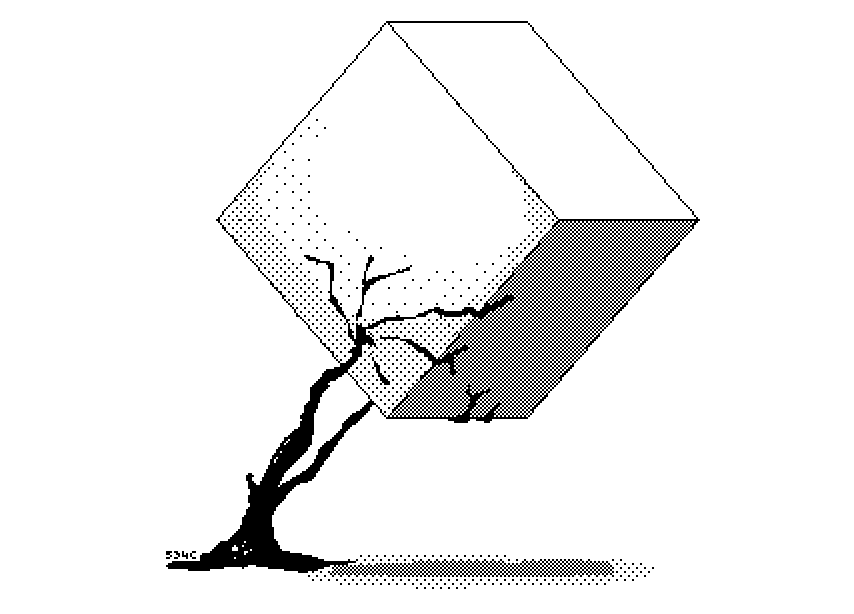

Lights Out, Words Gone - Bombay Bicycle Club
Ocean City - Grimm
23 Minutes in Brussels - Luna
Night Body - AT / ALL
Freakin' and Peakin' - Luna
Old, New Bicycle - Helvetia
evening - corn wave
Having No Head - The 1975
new body rhumba - LCD Soundsystem
I like it when you sleep for you are so beautiful yet so unaware of it - The 1975
So Far (It's Alright) - The 1975
Menswear - The 1975
What Should I Say - The 1975
Ribs - Lorde

Half Full Glass of Wine - Tame Impala
Santa Fe - DEVOTED
Expert in a Dying Field - The Beths
Meat - Krill
Taxes - Geese
Emily - Girlpool
Chateau - Angus & Julia Stone
Before You Gotta Go - Courtney Barnett
Time to Spare - Celeste Krishna
Naked Patients - Happyness
Sarah - Alex G
La Loose - Waxahatchee
Hollow Sound of the Morning Chimes - TOPS
Let Go - Sharon Van Etten
Until I'm Home - Ezra Williams
Hopefulessness - Courtney Barnett
Eulogy for You and Me - Tanya Davis